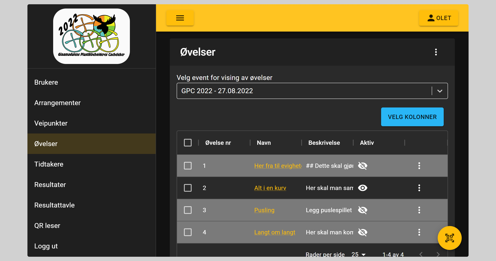
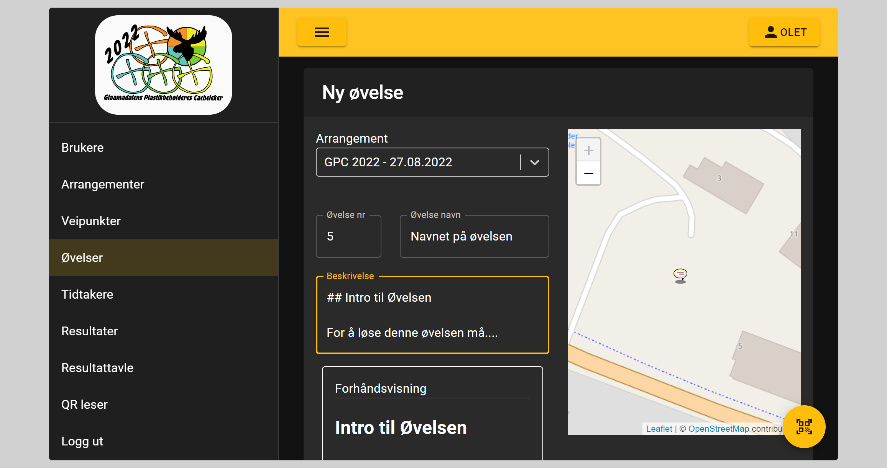
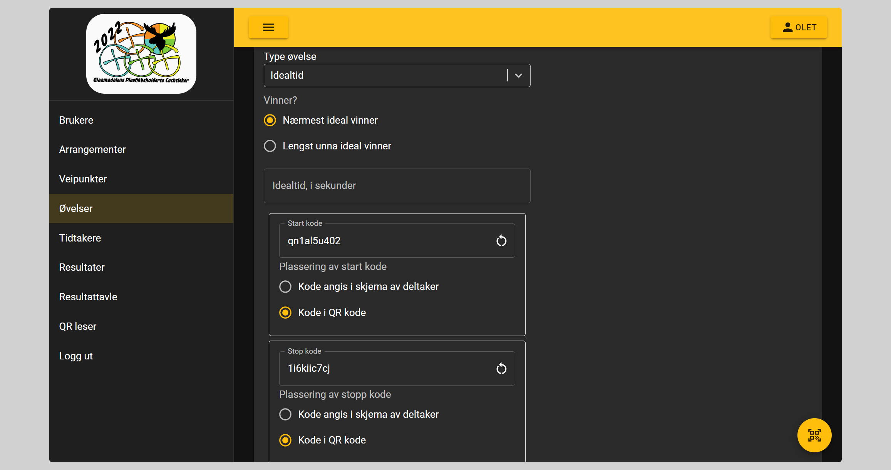

Øvelser

Type øvelser
- Tid
- Idealtid
- Poeng
- Lengde
Registrering av øvelser

Del 1
Her registeres
- Hvilket arrangement de tilhører
- Øvelse nummer
- Neste nummer, etter antall øvelser regnes ut. Nummer kan fritt velges
- Navn på øvelsen
- Beskrivelse av øvelsen
- Viktig at denne teksten inneholder
- Hvordan øvelsen skal løses
- Hva som ikke skal gjøres
- For formatering av denne teksten, benytt Markdown
- Grunn syntaks for Markdown
- Viktig at denne teksten inneholder
Ved registrering vises lokasjonen for valgte arrangement, dette for å lettere registere veipunktet på riktig sted
Del 2
For opplysninger som laget ikke skal ha før etter at oppgaven er startet fylles inn i feltet Ekstra info
Dette feltet kan for eksempel benyttes til å angi koden til en kodelås som trengs for å starte oppgaven.
Kode til låsen: 1234
Videre velges type øvelse reg første avsnitt.
For at brukere skal se hvor på området øvelsen foregår velges posisjonen på kartet til høyre
Del 3
Øvelser på tid
Først velges om det er lengst eller kortest tid som er den som er best.
Videre angis kodene som skal benyttes for start og stopp. Standard er at koden er en del av QR koden. Det genereres automatisk forskjellige koder til både start og stopp til hver øvelse. Man kan velge egne koder, men også generere nye ved å trykke på oppfrisk knappen på enden av feltet
Øvelser på idealtid

For idealtid øvelser angis det samme som for tid øvelser, men i tillegg må idealtiden angis. Idealtid angis i sekunder
Lengde og poeng øvelser
For disse øvelsene er det kun om høyest/lavest, kortest/lengst som skal velges
Nyttig om øvelser
Stengte øvelser
Alle øvelser er stengt fram til de åpner. Dette gjør at lagene ikke kan starte med oppgavene, oppgavene er heller ikke synlig på kartet.
Øvelser kan åpnes / stenges enkeltvis eller ved å markere avkrysningsbokser i tabellen.
Ved å scanne en av QR kodene til øvelsene vil arrangører få opp informasjonsside om øvelsen. Her kan man raskt og enkelt åpne / stenge enkeltøvelser.
Stenging av enkeltøvelser kan benyttes i løpet av dagen om man som øvelse vakt må ha en pause, eller om man må gjøre andre endringer.
Når man stenger en øvelse kan de som har start fullføre, men det er ikke mulig å starte på nytt
QR koder
QR koder til øvelser
- Informasjon (Denne benyttes for å raskt åpne informasjon om øvelser, før man starter)
- Start (Brukes for å starte tidtaker øvelser)
- Stopp (Brukes for å stoppe tidtaker øvelser)
- Geocheckere (Kan være flere checkere pr øvelse)